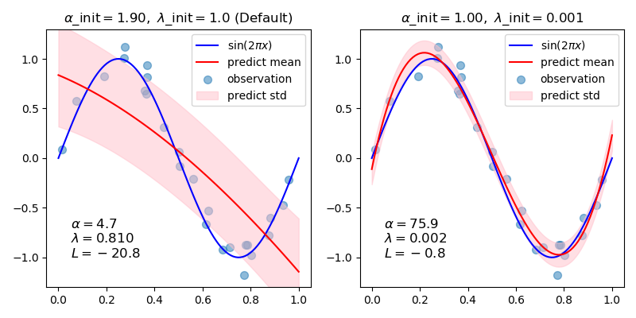

Note
Click here to download the full example code
Curve Fitting with Bayesian Ridge Regression¶
Computes a Bayesian Ridge Regression of Sinusoids.
See Bayesian Ridge Regression for more information on the regressor.
In general, when fitting a curve with a polynomial by Bayesian ridge regression, the selection of initial values of the regularization parameters (alpha, lambda) may be important. This is because the regularization parameters are determined by an iterative procedure that depends on initial values.
In this example, the sinusoid is approximated by a polynomial using different pairs of initial values.
When starting from the default values (alpha_init = 1.90, lambda_init = 1.), the bias of the resulting curve is large, and the variance is small. So, lambda_init should be relatively small (1.e-3) so as to reduce the bias.
Also, by evaluating log marginal likelihood (L) of these models, we can determine which one is better. It can be concluded that the model with larger L is more likely.

print(__doc__)
# Author: Yoshihiro Uchida <nimbus1after2a1sun7shower@gmail.com>
import numpy as np
import matplotlib.pyplot as plt
from sklearn.linear_model import BayesianRidge
def func(x): return np.sin(2*np.pi*x)
# #############################################################################
# Generate sinusoidal data with noise
size = 25
rng = np.random.RandomState(1234)
x_train = rng.uniform(0., 1., size)
y_train = func(x_train) + rng.normal(scale=0.1, size=size)
x_test = np.linspace(0., 1., 100)
# #############################################################################
# Fit by cubic polynomial
n_order = 3
X_train = np.vander(x_train, n_order + 1, increasing=True)
X_test = np.vander(x_test, n_order + 1, increasing=True)
# #############################################################################
# Plot the true and predicted curves with log marginal likelihood (L)
reg = BayesianRidge(tol=1e-6, fit_intercept=False, compute_score=True)
fig, axes = plt.subplots(1, 2, figsize=(8, 4))
for i, ax in enumerate(axes):
# Bayesian ridge regression with different initial value pairs
if i == 0:
init = [1 / np.var(y_train), 1.] # Default values
elif i == 1:
init = [1., 1e-3]
reg.set_params(alpha_init=init[0], lambda_init=init[1])
reg.fit(X_train, y_train)
ymean, ystd = reg.predict(X_test, return_std=True)
ax.plot(x_test, func(x_test), color="blue", label="sin($2\\pi x$)")
ax.scatter(x_train, y_train, s=50, alpha=0.5, label="observation")
ax.plot(x_test, ymean, color="red", label="predict mean")
ax.fill_between(x_test, ymean-ystd, ymean+ystd,
color="pink", alpha=0.5, label="predict std")
ax.set_ylim(-1.3, 1.3)
ax.legend()
title = "$\\alpha$_init$={:.2f},\\ \\lambda$_init$={}$".format(
init[0], init[1])
if i == 0:
title += " (Default)"
ax.set_title(title, fontsize=12)
text = "$\\alpha={:.1f}$\n$\\lambda={:.3f}$\n$L={:.1f}$".format(
reg.alpha_, reg.lambda_, reg.scores_[-1])
ax.text(0.05, -1.0, text, fontsize=12)
plt.tight_layout()
plt.show()
Total running time of the script: ( 0 minutes 0.125 seconds)